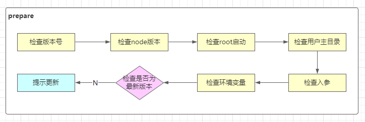
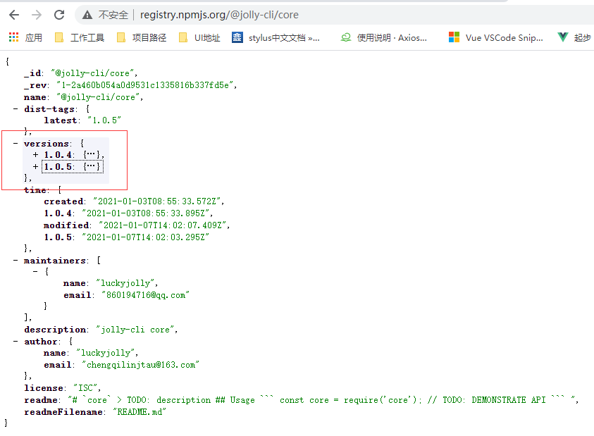

前导
收获
如何做架构设计和技术方案设计
脚手架核心流程，通过 commander 完成脚手架框架搭建
- 如何让Node项目支持ES Module
主要内容
- 脚手架需求分析和架构设计
- 脚手架模块拆分策略和core模块技术方案
- 脚手架执行准备过程实现
- 脚手架命令注册实现（基于commander 库）
作业
- 绘制
imooc-cli脚手架架构设计图 - 实现
imooc-cli脚手架准备过程代码 - 通过 commander 框架实现一个脚手架，包括自定义 option 和 command 功能
- 通过 webpack 和原生两种方式实现 Node 对ES Module 的支持
注意事项
本周前半部分偏架构设计，是架构师日常工作
架构师应该把整体和局部想清楚在开始做
将代码实现细节抽象，通过系统论思想构建复杂系统：
建立子系统，关注子系统的输入和输出是什么。然后由子系统构建较复杂的系统，再由较复杂的系统构建更复杂的系统。
脚手架整体架构设计
大厂怎么做项目
设计阶段
- 搞清楚业务或研发过程中的痛点 -- 为什么有当前业务
- 由痛点形成需求
- PD(产品) -> PRD文档（产品需求文档）
- 原型图
- 预期目标
- PRD 评审
- 原型图评审
- PD(产品) -> PRD文档（产品需求文档）
- 技术方案设计阶段，产生技术方案文档。确定需求在技术上的实现，及确定技术方案实现成本
- 技术选型
- 技术架构 -> 架构设计
- API定义
- 技术调研
- 评估技术风险
- 成本可接受，项目立项
- kick-off（启动）
- 确定项目成员：PD、PM(项目经理)、前端、后端、测试人员、设计等
- kick-off（启动）
- 项目排期（计划）
- 时间点
- WBS 文档（工作分解结构）
实施阶段
- 软件类项目，交互/视觉设计，输出设计稿
开发，输出代码
- 前后端开发
- 联调
测试，输出测试报告
- 单元测试（开发人员）
- 功能测试（测试人员）
- 性能测试（测试人员）
交给产品或业务人员验收
- 微调
- 上线

痛点
- 创建项目/组件时，重复代码问题
- 协同开发时，git操作不规范问题
- 发布上线耗时，且容易出错问题
需求分析
- 通用的研发脚手架
- 通用的项目/组件创建能力
- 模块支持定制；定制后能快速生效
- 模板支持快速接入，极低的接入成本
- 通用的项目/组件发布能力
- 发布过程自动完成标准的git操作
- 发布成功后自动删除开发分支并创建tag
- 发布后自动完成云构建、OSS(静态资源服务器)上传、CDN上传、域名绑定
- 发布过程中支持测试/正式两种模式
大厂git操作规范
分支管理
master
不会再次基础上开发，仅用作代码同步：上线时，将 dev/0.0.1 push到master上，进行 merge 然后打上 release/0.0.1 tag
dev 开发
dev/0.0.1- dev/0.0.2
release 发布
- release/0.0.1 删除 dev/0.0.1
git操作流程

imooc-cli 架构图
- 脚手架的核心架构
- 脚手架初始化
- 完成整个执行流程
- 命令的执行
- 异常的监听
- ......
- 为什么需要后台 API
- 实现通用能力
- 接入外部项目
- webSocket 服务
- 云构建
- 云发布
- 静态资源
- 组件构建结果
- 数据体系
- MySQL 组件相关信息
- MongoDB 项目模板

脚手架技术方案设计
脚手架拆包策略
参考 lerna 项目的拆包，根据模块的功能，将脚手架模块分为：
- 核心模块 -- core
- 命令 commands
- 初始化
- 发布
- 清除缓存
- 模型层 models
- Command 命令
- Project 项目
- Component 组件
- Npm 模块
- Git 仓库
- 支撑模块 utils
- Git 操作
- 云构建
- 工具方法
- API 请求
- Git API
core 模块技术方案
实现命令的执行流程
准备阶段

- 检查root启动：避免权限问题。如果是root启动（mac root 用户登录），把权限降级到普通用户
- 检查用户主目录：要往主目录写入缓存。设计本地缓存体系中的本地文件
- 检查环境变量：本地缓存需要
- 检查是否为最新版本：检查cli版本
- 提示更新：更新cli
命令注册
命令执行
涉及技术点
核心库
import-local优先执行本地脚手架commander实现命令注册
用到的工具库
npmlog打印日志fs-extra文件操作。基于fs封装的semver版本比对。检查当前版本是否为最新版本colors控制终端文本颜色user-home获取用户主目录dotenv获取环境变量root-checkroot 账户检查和自动降级
脚手架执行准备过程实现
require() 支持加载的资源类型
.js必须使用
module.exports/exports输出模块.json使用
JSON.parse()方法对json文件进行解析，生成一个对象.node.node文件是C++插件(C++ AddOns)，使用process.dlopen()打开.any当
.js文件处理使用
require()加载一个内容为javascript代码的.txt文件，是可以执行成功的
npmlog
只能调用
log.addLevel()添加的方法，进行日志输出log.addLevel('warn', 4000, { fg: 'black', bg: 'yellow' }, 'WARN')log.level默认 level 为 info 级(2000)。低于这个级别的日志，不会被打印
// default level log.level = 'info' // …… log.addLevel('verbose', 1000, { fg: 'blue', bg: 'black' }, 'verb')log.verbose('test', 'msg')默认下，本调用的也不会打印log.heading在 log 日志之前，添加前缀
- 通过
log.headingStyle定义样式
- 通过
检查root启动
process.geteuid()- 返回 0， 代表超级管理员
- 返回501，代表登录用户
root-check降级权限：var rootCheck = require('root-check'); rootCheck();process.env.SUDO_GID可以配置的登录用户分组idprocess.env.SUDO_UID可以配置的用户标识idprocess.setgid(gid)使用户所在的分组idprocess.setuid(uid)设置用户标识iddefaultUid()返回平台的 用户标识var DEFAULT_UIDS = { darwin: 501, // mac UNIX-like freebsd: 1000, // FreeBSD UNIX-like linux: 1000, sunos: 100 // Solaris 系统 }
检查用户主目录
path-exists检查文件是否存在user-home获取用户主目录os-homedir源码
检查入参
在 debug 模式下，使用 log.verbose() 打印日志。但log.verbose() 打印日志，正常状态下，是不能打印的。所以这里我们需要解析参数，判断是否是 debug 模式。
minimist库，解析参数。console：args: { _: [], debug: true }参数解析之后，要修改
log.LOG_LEVEL；
检查环境变量
dotenv 获取环境变量
- 在用户主目录下创建
.env文件存储和读取环境变量 - 默认路径：
path.resolve(process.cwd(), '.env')当前文件夹下的 - 从
.env环境中获得的值，放在了process.env中
检查当前是否为最新版本
获取最新版本号和模块名
使用 npm API， 获取所有版本号
网址
仓库地址/npm包名，私有仓库也可以这样获取版本号http://registry.npmjs.org/@jolly-cli/corehttp://registry.npm.taobao.org/@jolly-cli/core

使用的 chrome 插件 JSONView
提取所有版本号，比对哪些版本号是大于当前版本号
获取最新版本号，提示用户更新到该版本
有个坑
lerna create get-npm-info ./utils/get-npm-info创建完包之后，包实际在
core下面lerna success create New package get-npm-info created at ./core\get-npm-infourl-join库，将多个url碎片，拼接生成完整url。
遇到的问题总结
npm link报文件存在错误File exists: D:\nodejs\nodejs\jolly-cli先
npm unlink后，然后重新npm linkwindows 系统上
cli命令不能执行jolly-cli : 无法加载文件 D:\nodejs\nodejs\jolly-cli.ps1，因为在此系统上禁止运行脚本。去根
nodejs安装目录中删除.ps1后缀的文件，重新运行cli命令即可